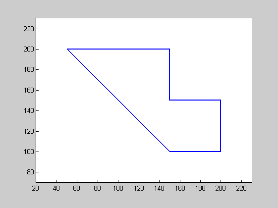

Contents
%DEMOEXPANDPOLYGON Expand a polygon by a given distance % demoExpandPolygon % % Example % demoExpandPolygon % % See also % % % ------ % Author: David Legland % e-mail: david.legland@grignon.inra.fr % Created: 2009-06-17, using Matlab 7.7.0.471 (R2008b) % Copyright 2009 INRA - Cepia Software Platform.
Base polygon
% create a non-convex polygon poly = [200 100;200 150;150 150;150 200;50 200;150 100]; % show the polygon figure(1); clf; hold on; drawPolygon(poly, 'linewidth', 2); % set up display axis equal; axis([20 230 70 230]);
Positive expansion
% expand the polygon by a positive distance (outside of the polygon) polyOut = expandPolygon(poly, 10); % draw the expanded polygon drawPolygon(polyOut, 'k');

Negative expansion
% expand the polygon by a negative distance (inside the polygon) polyIn = expandPolygon(poly, -20); % draw the expanded polygon drawPolygon(polyIn, 'g'); % decorate legend('Original', 'Outside', 'Inside')